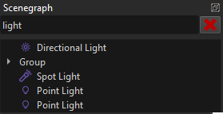
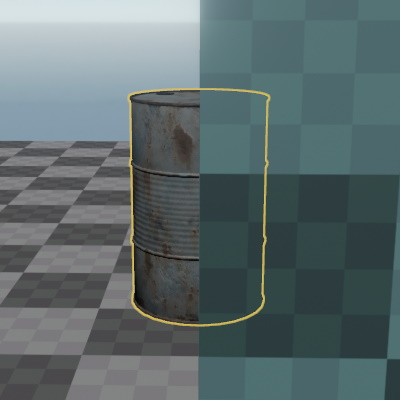
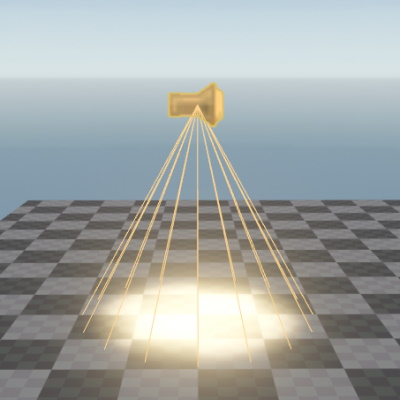

Selecting Objects
This page describes everything related to object selection.
Common
- Pressing
ESCwill clear the selection.
Viewport - Single Selection
- Left-click on an object to select it.
- Hold
CTRLto add or remove objects from the selection. - Hold
CTRLand middle-click an object to open its material document. This does not work for prefab instances.
Viewport - Marquee Selection
- Hold
SPACEto enable marquee selection - Then left-click and drag to add items to the selection
- Additionally hold
CTRLbefore the left-click to instead remove items from the selection - Press
ESCto cancel the marquee selection
Scene Tree
You can filter the scene tree with the search box at the top:

Selection Pivot
If you select multiple objects, then the object that you add to your selection last determines the position of editing gizmos and thus the pivot point for some operations. For example, you can rotate a group of objects around a specific point, by having a (dummy) object at that point and adding it to your selection last.
To change which object is your pivot, just hold CTRL and click an object to remove it from you selection, then click it again to re-add it to the selection. This way it will become the last object in the selection and therefore the new pivot.
Selection Outline
Selected objects are highlighted with a yellow outline, which is visible through walls. This outline can be toggled with the S key or the respective toolbar button.

Shape Icons
Some component types use a shape icon as their graphical representation. This makes it possible to select these types of objects in the viewport. Shape icons can be toggle with the I key.

Selection Bounding Box
When visualizers are enabled, the editor display a yellow bounding box around each selected object. Visualizers can be toggled with the V key.
Select Transparent
Press the U key to toggle whether transparent objects should be selectable. Disabling this can be very useful if you have large objects with special shaders, for instance to create atmospheric effects like volumetric lighting. Such shapes can prevent you from selecting anything else, even though they are mostly invisible.